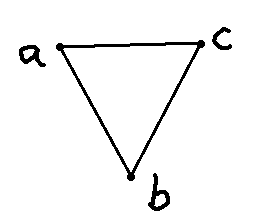
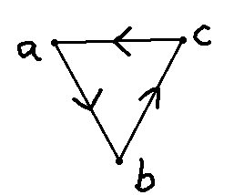

4 Simplicial homology
“Her thoughts were theorems, her words a problem,
As if she deem’d that mystery would ennoble ’em.”
— Lord Byron, in “Don Juan”
Simplicial complexes are excellent tools to model finite spaces. But how do we extract topological information from them? How do we count the holes?
This is what homology does. It is one of the most powerful invariants in topology: a functor that transforms topological spaces into algebraic objects (groups, vector spaces) that we can compute with. In this chapter, we will build it step by step using simplicial complexes.
4.1 What is a hole?
How can we detect a hole in a simplicial complex? Intuitively, a hole is something that is not there. A circle has a 1-dimensional hole (a loop with no filling). A hollow sphere has a 2-dimensional hole (a surface enclosing empty space). A solid ball has no holes at all.
Let’s reason using the following simplicial complex \(S\) (with vertex set \(V = \{a, b, c\}\)) as an example:

This complex has three vertices (\(a, b, c\)) and three edges (\([a,b], [b,c], [c,a]\)) but no 2-simplex (no filled triangle). Topologically, it looks like a circle — and a circle has a hole!
4.2 Orientation and the boundary operator
Let’s add a direction (orientation) to the 1-simplices of \(S\):

Intuitively, a 1-dimensional hole is formed when we have a sequence of edges that closes on itself, like a snake biting its own tail. It would be nice if we could detect these cycles in a formal manner… Luckily for us, Poincaré was a very smart guy.
To describe a segment in a vector space, we need only two points: the beginning \(u\) and the end \(v\). This vector can be written as \(v - u\). Inspired by this, we define a function \(\partial\) called the boundary operator on the edges of \(S\) by
\[ \partial_1([x, y]) = y - x. \]
But what is the meaning of \(a - b\)? This is just a “formal sum”: we treat \(a, b, c\) as a basis of a vector space. This vector space is called a free abelian group on \(V\). Its elements are formal linear combinations like \(2a - b + 3c\).
4.3 Chain complexes
Let’s organize this properly. For each dimension \(k\), we define:
Definition 4.1 The \(k\)-th chain group \(C_k(S)\) is the free abelian group generated by the \(k\)-simplices of \(S\). Its elements (called \(k\)-chains) are formal linear combinations of \(k\)-simplices with integer coefficients.
For our triangle example:
- \(C_0(S)\) is generated by \(\{a, b, c\}\) — formal sums of vertices
- \(C_1(S)\) is generated by \(\{[a,b], [b,c], [c,a]\}\) — formal sums of edges
- \(C_2(S) = 0\) — there are no 2-simplices (no filled triangle)
We extend \(\partial\) linearly to all chains. We also impose that \([a, b] = -[b, a]\) (this makes the orientation consistent). The boundary operator for a \(k\)-simplex \([v_0, v_1, \ldots, v_k]\) is defined as:
\[ \partial_k([v_0, v_1, \ldots, v_k]) = \sum_{i=0}^{k} (-1)^i [v_0, \ldots, \hat{v}_i, \ldots, v_k] \]
where \(\hat{v}_i\) means “remove \(v_i\)”. For example:
- \(\partial_1([a, b]) = b - a\) (delete first vertex, then delete second with a sign change)
- \(\partial_2([a, b, c]) = [b, c] - [a, c] + [a, b] = [a, b] + [b, c] + [c, a]\) (the boundary of a filled triangle is its three edges)
4.4 Cycles and boundaries
Now, let’s compute \(\partial_1\) on the sum of all edges of our circle-like complex:
\[ \partial_1([a, b] + [b, c] + [c, a]) = (b - a) + (c - b) + (a - c) = 0. \]
The boundary is zero! This makes geometric sense: if you walk along all three edges, you return to where you started — there is no “boundary” left over. This is a cycle.
Definition 4.2 A \(k\)-chain \(\sigma\) is called a \(k\)-cycle if \(\partial_k(\sigma) = 0\). The set of all \(k\)-cycles is denoted \(Z_k = \ker(\partial_k)\).
Definition 4.3 A \(k\)-chain \(\sigma\) is called a \(k\)-boundary if there exists a \((k+1)\)-chain \(\tau\) such that \(\partial_{k+1}(\tau) = \sigma\). The set of all \(k\)-boundaries is denoted \(B_k = \text{im}(\partial_{k+1})\).
A key algebraic fact is that every boundary is a cycle:
\[ \partial_k \circ \partial_{k+1} = 0. \]
This means \(B_k \subseteq Z_k\). You can verify this with the filled triangle \([a,b,c]\): its boundary \(\partial_2([a,b,c]) = [a,b] + [b,c] + [c,a]\) is indeed a cycle (as we computed above).
4.5 Homology: the punchline
Now we arrive at the key idea. Both cycles and boundaries are “things with zero boundary.” But a boundary is a cycle that is trivially zero — it bounds a higher-dimensional simplex. A hole is a cycle that is not a boundary. It closes on itself, but there is nothing filling it in.
Definition 4.4 The \(k\)-th homology group of a simplicial complex \(S\) is
\[ H_k(S) = Z_k / B_k = \ker(\partial_k) / \text{im}(\partial_{k+1}). \]
The \(k\)-th Betti number \(\beta_k\) is the rank of \(H_k(S)\).
The Betti numbers count the topological features of each dimension:
| Betti number | Counts |
|---|---|
| \(\beta_0\) | Connected components |
| \(\beta_1\) | 1-dimensional holes (loops) |
| \(\beta_2\) | 2-dimensional holes (cavities) |
| \(\beta_k\) | \(k\)-dimensional holes |
4.5.1 Example: the triangle without filling
For our complex \(S\) with vertices \(\{a, b, c\}\) and edges \(\{[a,b], [b,c], [c,a]\}\) but no 2-simplex:
- \(H_0(S)\): The complex is connected (you can walk from any vertex to any other), so \(\beta_0 = 1\).
- \(H_1(S)\): The cycle \([a,b] + [b,c] + [c,a]\) is not a boundary (since \(C_2 = 0\), there are no boundaries at all!). So \(\beta_1 = 1\) — there is one loop.
- \(H_k(S) = 0\) for \(k \geq 2\).
4.5.2 Example: the filled triangle
Now suppose we add the 2-simplex \([a,b,c]\) (filling in the triangle). Then \(\partial_2([a,b,c]) = [a,b] + [b,c] + [c,a]\), which means the cycle from before is now a boundary. The hole is filled! So \(\beta_1 = 0\).
4.5.3 Example: the sphere
A simplicial sphere (the surface of a tetrahedron, for instance) has \(\beta_0 = 1\) (connected), \(\beta_1 = 0\) (no loops), and \(\beta_2 = 1\) (one cavity — the hollow inside).
4.6 Why homology matters for data
Homology is a topological invariant: if two spaces are homeomorphic, they have the same homology groups. Conversely, if two spaces have different Betti numbers, they cannot be homeomorphic. This is the “simplification map” \(H\) we alluded to in the topology chapter — it reduces a complex topological space to a sequence of numbers.
Moreover, homology is computable. Given a simplicial complex (which is just a list of sets), we can write the boundary operators as matrices and compute their kernels and images using linear algebra. This makes homology a perfect tool for data analysis: build a simplicial complex from data, compute its homology, and learn about the “shape” of the data.
The next question is: at which scale should we build the simplicial complex? We will answer this in the chapter on persistent homology, where we build complexes at every scale and track how features appear and disappear.